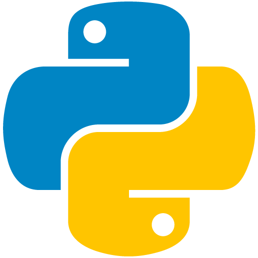
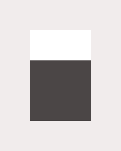
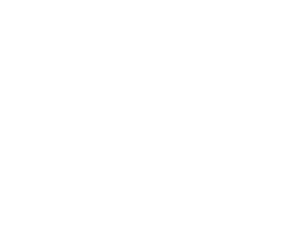

ChatGPT
30 de novembrofor item in range(3): print(item)A interface de conversa chega ao cotidiano.
Linguagem natural, memória e ferramentas conectadas à operação.

Escola online de programação
e Inteligência Artificial.
 @pycodebrSeguir
@pycodebrSeguirConteúdo novo todos os dias.
for item in range(3): print(item)A interface de conversa chega ao cotidiano.
O desenvolvedor conecta o modelo à aplicação.
Marcos de acesso e composição, não o início da pesquisa em inteligência artificial.
>
lendo src/busca.py
- if filtro and termo:
+ if filtro is not None and termo:
pytest · 12 passed
diff pronto para revisão
Representação didática: ler arquivos, alterar código, testar e revisar o diff.

Preview em fevereiro.
Disponibilidade geral em maio.
Apresentado em abril.
Execução no terminal.
Procedimentos, scripts e referências
carregados conforme a tarefa.
A CLI é o aplicativo que conduz a execução. O modelo é uma escolha separada.

Um dos pioneiros desta onda de assistentes pessoais open source.
Execução por ferramentas, memória persistida e criação de skills.
O projeto que se tornou OpenClaw começou em 2025. Hermes é um projeto independente, lançado depois.
A IA trabalha dentro do projeto.
Procedimentos reutilizáveis e integrações.

 >_
>_Contexto e execução entre tarefas e canais.


Essa base pode ser replicada e adaptada a outras operações, conforme sistemas, recursos e permissões.
Algumas etapas rodam com código, sem chamar o modelo a cada mensagem.
EquipeA campanha precisa de criativos novos.
KratosPreparei dez propostas para revisão.
Preparar a proposta era a ação permitida. Publicar e comprar mídia são decisões separadas.
Interfaces ilustrativas. A coleta e a iniciativa dependem das permissões de cada fluxo.
 Google Drivevídeo e transcriçãoPasta de cortesvídeos no DriveAvisolink no WhatsAppEncontros Elite
Google Drivevídeo e transcriçãoPasta de cortesvídeos no DriveAvisolink no WhatsAppEncontros Elitefaster-whisper local · alinhamento de cada palavra no áudio
Cada corte ganha um mundo visual próprio, montado em HTML com GSAP e renderizado com HyperFrames.
heditor · skill pública da PycodeBR · github.com/pycodebr/heditor
cortes / encontro-11Os cortes do encontro 11 estão no Drive. São quatro vídeos para você revisar.
A aprovação acontece no próprio WhatsApp; publicar continua sendo outra decisão.
Fluxo usado nos cortes dos encontros Elite. Trechos reais editados pelo Hermes, exibidos sem áudio.
PRD, contexto e skills.
delegate_task
editando app/filtros/views.py
worktree: sprint-2
2 observações de revisão
pytest · 18 passed

3 consultas encontradas
relatório entregue ao principal
Diff, testes e critérios da sprint.
delegate_task cria filhos Hermes. As CLIs externas são chamadas pelo terminal, com ambientes e acessos preparados.

Docker Swarm · VPS PostgreSQL
PostgreSQL RabbitMQ
RabbitMQ Redis
RedisBase dos encontros Elite #03 e #04. cAdvisor e node-exporter complementam as métricas; Alloy é a recomendação atual para a coleta de logs.
Arquitetura de referência proposta. Eventos e consultas são mecanismos separados; a cena não cria PRs nem altera serviços.
 Aberta
AbertaTeste do comportamento afetado
Diff revisável e riscos descritos
Versão vinculada à aprovação
- if filtro and termo:
+ if filtro is not None and termo:
Demonstração local, sem enviar mensagens nem alterar repositórios. Uma mudança na PR exige nova revisão.
Hermes Agent · Nous Research e comunidade
Felipe Azambuja · PycodeBR
$
guia: materiais/comecando-com-hermes-do-zero.md
Repositório com slides, guias e código